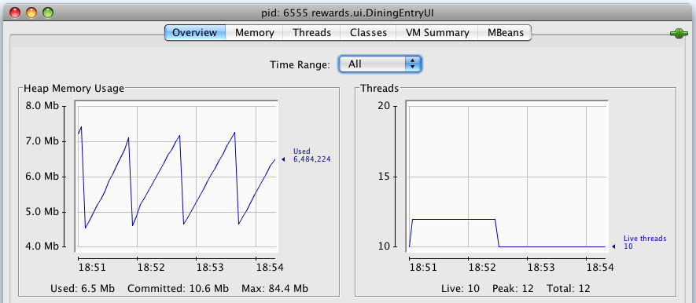
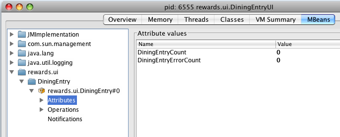
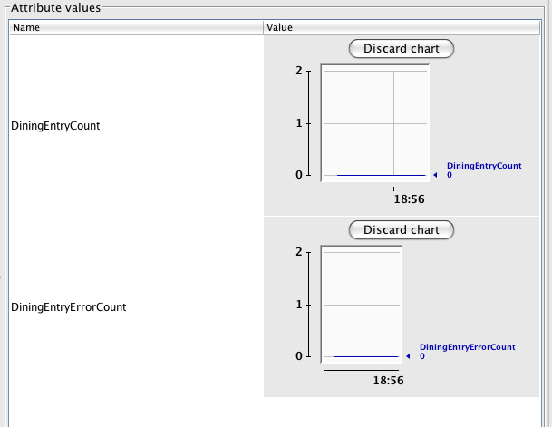

Welcome to Enterprise Spring. In this lab you'll come to understand the basic workings of the Reward Network reference application and you'll be introduced to the tools you'll use throughout the course.
The lab is broken into four major sections. In the first section you'll get up and running with the Spring Tool Suite and get to know the project structure and Maven-based build system.
In the second section, you'll get an overview of the 'Reward Network' application domain and API that will be used throughout the course.
In the third section, you'll finish testing and implementing a simple command-line user interface for the Reward Network application.
In the fourth section, you'll monitor UI application activity using Spring's support for JMX.
Have fun with the steps below, and remember that the goal is to get comfortable with the tools and application domain concepts. If you get stuck, don't hesitate to ask for help!
What you will learn
Basic features of the Spring Tool Suite
Core RewardNetwork domain and API
Review Spring JMX features and usage of JConsole
Estimated time to complete: 45 minutes
If you feel you have a good understanding of the material, you can
work with the TODOs listed in the Tasks view in
Eclipse/STS. To display them, click on Window -> Show view -> Tasks.
Alternatively, the next section contains more detailed step-by-step
instructions. Each task in STS is also described in more detail by a
corresponding section in the step-by-step instructions.
Getting Started with the Spring Tool Suite (STS) (details)
Launch STS. Browse through the working sets and projects to make yourself familiar with the Tool Suite, and how the lab projects that you will be completing in this course are structured. You might also have to configure STS to view the TODOs in the Task pane.
Understanding the 'Reward Network' Application Domain and API (details)
Please review Reward Dining: The Course Reference Domain in the preface to this handout for understanding the background of the Reward Network application domain. Once completed, execute the following steps:
Visualize RewardNetwork bean graph with STS (navigate to 00-reward-network->rewards/src/main/resources and open app-config.xml).
Follow TODO 01 and run the DiningEntryUI application. Enter the following details
Dining Amount: 100
Member credit card number: 1234123412341234
Merchant number: 1234567890
Would you like to enter another Dining transaction? [y/n]: n
Complete TODO 02 - 03 and execute the JUnit test. The test will fail.
Complete TODO 04 and execute the JUnit test. This time the test will pass.
Redo TODO 01 to verify that the interactive dining entry works as expected. It should return a confirmation now.
Complete TODO 05 - 07 to apply JMX metadata to DiningEntry. (details)
Complete TODO 08 to enable automatic registration of DiningEntry as a JMX MBean. (details)
Complete TODO 09 by launching DiningEntryUI and monitoring its statistics via JConsole. (details)
Congratulations, you've completed this lab!
The Spring Tool Suite (STS) is a free and enterprise-grade IDE built on the Eclipse Platform. In this section, you will become familiar with the Tool Suite and how the lab projects that you will be completing in this course are structured.
Launch the Spring Tool Suite by using the shortcut link on your desktop or from the sts-xxx directory where you installed the course content. You will see the STS splash image appear.
![[Tip]](images/tip.png) | Tip |
|---|---|
| If you've just opened STS, it may still be starting up. Wait several moments until the progress indicator on the bottom right finishes. When complete, you should have no red error markers within the Package Explorer or Problems views. |
Now that STS is up and running, you'll notice that within the Package Explorer view on the left, projects are organized by Working Sets. Working Sets are essentially folders that contain a group of Eclipse projects.
If it is not already open, expand the 01-ei-course-intro Working Set. Within you'll find two projects: ei-course-intro and ei-course-intro-solution. This pair of projects is a common pattern throughout the labs in this course. Clearly one is the solution which we have completed for you, the other is the one you will work on - the working project. For each lab, you will follow the directions to complete the working project, and when finished, you can check your work against the solution to compare your implementation to that of the course designers.
All lab projects are imported as plain Eclipse projects, even the Maven POM file for each project is present. You can have a look at the POM files if you want, but don't modify them! Let's have a look to the dependencies of the projects.
Open the working project (ei-course-intro) and expand its Referenced Libraries node. Look at the dependencies. For the most part, these dependencies are straightforward and probably similar to what you're used to in your own projects. For example, there are several dependencies on Spring Framework jars, on Hibernate, DOM4J, etc.
![[Note]](images/note.png) | Note |
|---|---|
| Note that all dependencies have been pre-installed as part of the training environment, so no network access is required to resolve and download jar files. This is accomplished by setting the M2_REPO classpath variable to point to the directory where the repository is located. |
If you examine the project's build path, you will also notice
that the ei-course-intro project has a dependency
on the rewards project contained in the
00-reward-network Working Set. In the next section
you'll get to know the rewards project in
detail.
You will often be asked to work with TODO instructions. They are
displayed in the Tasks view in Eclipse/STS. If not
already displayed, click on Window -> Show View ->
Tasks (be careful, not Task
List). If you can't see the
Tasks view, try clicking Other
... and looking under General.
By default, you see the TODOs for all the active projects in Eclipse/STS. To limit the TODOs for a specific project, execute the steps summarized in the following screenshots:
Caution: It is possible, you
might not be able to see the TODOs defined within the XML files. In
this case, you can check the configuration in Preferences
-> General -> Editors -> Structured Text Editor -> Task
Tags pane. Make sure Enable searching for Task
Tags is selected. On the Filters tab,
verify if XML content type is selected. In case of refresh issues, you
may have to uncheck it and then check it again.
Please review Reward Dining: The Course Reference Domain in the preface to this handout if you haven't done so already. This document will guide you through understanding the background of the Reward Network application domain and thus provide context for the rest of the course. There are no tasks for you to complete within this document, it is simply for your understanding. Once you are finished reading, return here and carry on with the rest of this section.
In the Package Explorer view, navigate to 00-reward-network->rewards/src/main/resources and open app-config.xml. Take a moment to review this Spring configuration file and notice that it configures a bean of type RewardNetworkImpl that depends on three Repository beans for data access.
We will make extensive use of this simple POJO application layer throughout this course. No matter what the integration task, this portable business and data access logic will remain the same.
Open (CTRL-SHIFT-T) rewards.ui.DiningEntryUI from within the ei-course-intro project.
Notice that this very simple class consists of nothing more than
a main() method that bootstraps a Spring
ApplicationContext and invokes a
start() method on a
DiningEntry bean instance. In a moment, we'll
run this application and interact with it using the console.
First, take a look at the Spring XML consumed by the ApplicationContext. Open (CTRL-SHIFT-R) diningentry-config.xml in the ei-course-intro project.
Notice that this file consists of two <import> statements and a bean definition that wires up a DiningEntry bean. The DiningEntry gets injected with the very same RewardNetworkImpl bean that we saw in the original app-config.xml file.
Let's see what happens if we run the application in its current state.
Open (CTRL-SHIFT-T) the DiningEntryUI class once again. Right-click anywhere in the source file and navigate to Run As->Java Application (or use ALT-SHIFT-X + J). You should see the following at the console:
Welcome to the Reward Network dining entry UI
Please enter the following information to create and
process a new dining transaction
Dining amount:
Type 100 for the dining amount and hit Enter. Next, you'll be prompted for
Member credit card number:
Type 1234123412341234 and Enter. Finally you'll be asked for:
Merchant number:
Type 1234567890 and Enter.
You should now see:
Dining of $100.00 charged to '1234123412341234'
by '1234567890' on 4/24/09 12:00 AM
Rewarding account for dining via RewardNetwork...
Result: null
Would you like to enter another Dining transaction? [y/n]:
Notice the Result: null above? It appears that there is something wrong with the implementation.
Enter 'n' to end the process and then move on to the next step where you'll diagnose and fix the problem.
After the last step, you know there's something wrong with the DiningEntryUI application that is resulting in a null value being printed out where there should be an indicator of a successfully rewarded dining transaction.
While it would be easy enough to begin browsing the implementation source and trying to find and fix the problem, the best thing to do is ensure that this problem never happens again with a unit test.
You're in luck, because just such a unit test has already been started for you. Your job in this step will be to finish it, and in the process, fix the null output above.
| Note |
|---|---|
| Throughout this course, unit tests will be used to drive the process of completing labs. This promotes the best practice of unit testing in general and is a great way to let you know that you've successfully completed a given step. JUnit is the framework of choice, as it has wide adoption and great tooling support. |
Take a moment now to locate rewards.ui.DiningEntryTests in the src/test/java source folder of the ei-course-intro project. Right click on that class from the Package Explorer view and select Run As->JUnit Test (or use ALT-SHIFT-X + T).
Notice that the bar is green? This is because the tests are not yet finished. Your first job is to complete the tests and make them fail.
Take a look at the source for DiningEntryTests, and in particular take a moment to review the testValidDiningEntry() method. It is heavily commented to aid your understanding.
The idea is to test what happens when a user enters perfectly valid information about a dining transaction. That information should be accepted by the program and turned into a Dining object. Then, that Dining object should be passed to the RewardNetwork service's rewardAccountFor(Dining) method to be processed.
| Note |
|---|---|
| Understanding Mockito: As mentioned in the slide presentation, Mockito will be used as a mocking framework throughout this course. Mocking is a technique that greatly simplifies and speeds the process of unit testing. |
Notice how in testValidDiningEntry() a RewardNetwork mock is created and given instructions about how to behave under current conditions.
A DiningEntry object is created and supplied with an InputStream containing valid dining transaction input.
Finally, diningEntry.start() is called in order to begin processing the supplied user input. This 'turns on' the DiningEntry object for interactive use.
Complete the test by uncommenting the call to Mockito.verify() (TODO 02)
| Tip |
|---|---|
The "Tasks" view in the bottom half of the IDE shows all TODOs for the current project when you're using the default "Training" perspective. Just double-click on one of the TODOs to jump directly to the corresponding line in the containing file. |
Also uncomment the verifications and assertions at the bottom of the testInvalidDiningEntryFollowedByValidDiningEntry() test method. (TODO 03).
Now, re-run the test by right clicking and selecting Run As->JUnit Test.
Notice that both tests fail this time! The error message for testValidDiningEntry() should read as follows:
org.mockito.exceptions.verification.WantedButNotInvoked:
Wanted but not invoked:
rewardNetwork.rewardAccountFor(
Dining of $50.00 charged to '1234123412341234' by
'1234567890' on 4/24/09 12:00 AM
);
at rewards.ui.DiningEntryTests
.testValidDiningEntry(DiningEntryTests.java:96)
...
This error message is Mockito's way of telling you that the rewardNetwork method never got called by DiningEntry.start(). The DiningEntry object starts up and accepts user input correctly, but it never submits that user input to the RewardNetwork service.
In the next step you'll fix that problem.
Open DiningEntry and find TODO 04. Complete this task by passing the dining object as a parameter to rewardNetwork.rewardAccountFor(). Assign the return value to the confirmation variable that has already been declared for you.
Run DiningEntryTests once more. If TODO 04 was completed correctly, you should see the green bar. You've now tested that DiningEntry functions properly.
Now that the core DiningEntry implementation has been tested and we know it works, you should be able to run the interactive DiningEntryUI application successfully.
Navigate to DiningEntryUI and from the context menu, select Run As->Java Application.
Repeat the data entry steps from above:
Dining amount: 100
Member credit card number: 1234123412341234
Merchant number: 1234567890
This time, you should see the following result:
Dining of $100.00 charged to '1234123412341234' by
'1234567890' on 4/10/09 12:00 AM
Rewarding account for dining via RewardNetwork...
Result: Result: Reward of $8.00 applied to account
123456789. RewardConfirmation id is: 1
Finally, you'll be prompted to decide whether or not to enter another dining event. You can supply 'n' to exit the program:
Would you like to enter another Dining event? [y/n]: n
Thank you, goodbye.
Notice that the amount of the Reward was $8.00. This Restaurant apparently has a generous 8% cash back policy. That money is now available in the Beneficiary savings accounts associated with this Reward Network member Account.
Throughout this course, you will use JMX to manage and monitor the systems being integrated. JMX provides a very convenient way of visualizing and manipulating objects at runtime. As a refresher on JMX and Spring's support for JMX, let's follow the two very simple steps below to register the DiningEntry bean as a JMX MBean.
Open (CTRL-SHIFT-T) DiningEntry once again. Complete TODO 05 by adding Spring's @ManagedResource annotation on the class.
| Tip |
|---|---|
| Remember to use Content Assist in Eclipse (CTRL-SPACE) to aid you when applying the @ManagedResource annotation. |
Remaining within DiningEntry, complete TODO 06 and TODO 07 by adding the @ManagedAttribute annotation on the getDiningEntryCount() and getDiningEntryErrorCount() methods.
Open (CTRL-SHIFT-R) diningentry-config.xml. You'll notice a TODO which asks you to enable registration of JMX MBeans.
Now, complete TODO 08 by declaring the correct element from the context: namespace.
| Tip |
|---|---|
| Remember that Content Assist works from within Spring XML files, as well. Type <context: followed by CTRL-SPACE to see a list of elements available in the context: namespace. From the Content Assist menu, you'll notice that you can read the XSD documentation about each element. |
For the final step of the lab, let's launch DiningEntryUI once again. This time, however, we'll be able to monitor its statistics using JMX.
Right click on rewards.ui.DiningEntryUI and Run As->Java Application. The usual dining entry prompt should appear. Just leave it as is.
Now, open a windows command prompt (Start->Run->'cmd'), and type
C:\> jconsole
| Tip |
|---|---|
| JConsole is the default JMX console that ships with Java, versions 5.0 and greater. It's located in the bin directory of the JDK home: if that's not on your path, then 'cd' into that directory first! |
When the JConsole connection dialog appears, select the rewards.ui.DiningEntryUI process and click 'Connect'. After a few moments, you'll be presented with the following screen.
 |
| Note |
|---|---|
If you cannot connect, you need to set the
-Dcom.sun.management.jmxremote VM argument within the Run
Configurations... dialog for the DiningEntryUI Java Application. If you
are unfamiliar with how to do this, ask your instructor. |
|  |
| Connecting using JConsole |
|---|---|
If you can not see the process you started in JConsole (in the 'Local Process' section) or the connect times out, it is possible you do not have adequate security rights in your environment. In this case, you will have to connect to the process via a socket connection instead. In the VM arguments tab of your launch configuration, add the following arguments:
-Dcom.sun.management.jmxremote.port=8181
-Dcom.sun.management.jmxremote.authenticate=false
-Dcom.sun.management.jmxremote.ssl=false
Then restart the process, and connect via JConsole by using the 'Remote Process' selection, specifying a host of localhost and port of 8181. |
Click on MBeans and navigate to the rewards.ui->DiningEntry->rewards.ui.DiningEntry MBean.
Select 'Attributes' and notice that you're presented with the following:|  |
Now, double click on each of the 0 values under the Value column. This expands the values out to graphs as below:
|  |
Return to the console in STS, and complete a dining entry with valid values:
Dining amount: 100
Member credit card number: 1234123412341234
Merchant number: 1234567890
Notice that the DiningEntryCount graph has changed? It should now read '1'.
At the console, enter 'y' to enter another dining record. This time, supply invalid values:
Dining amount: 100
Member credit card number: 123
Merchant number: 456
You'll notice an error in red in the STS console, and back in JConsole, the DiningEntryErrorCount graph should now read '1' as well.
You've successfully completed this lab! At this point, you should have an understanding of the following:
The Spring Tool Suite and some of its features that aid in developing Spring-based applications
The Reward Dining application domain and the core RewardNetwork API
How to register any Spring-managed bean as a JMX MBean for easy monitoring and management
In the labs to come, we'll dive deeper into all of these topics. For now, you've got the basics and are ready to move on!